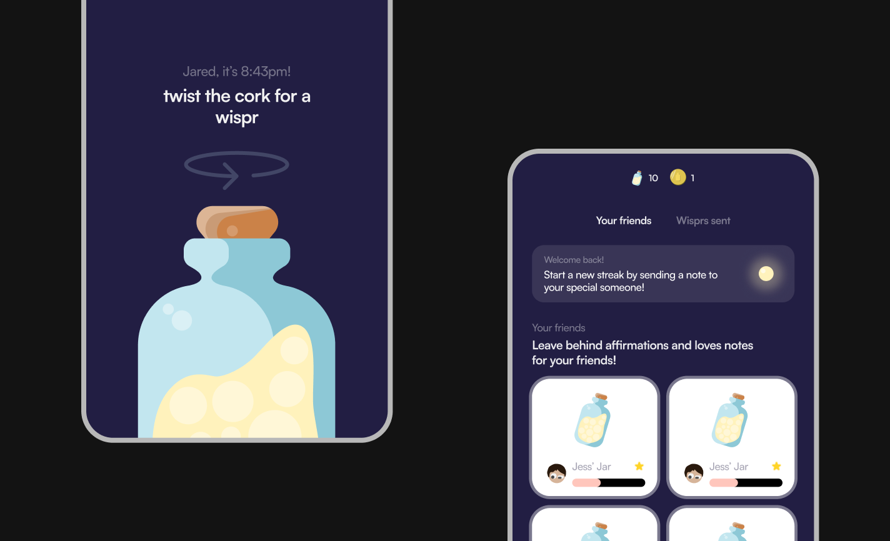
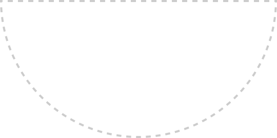
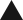
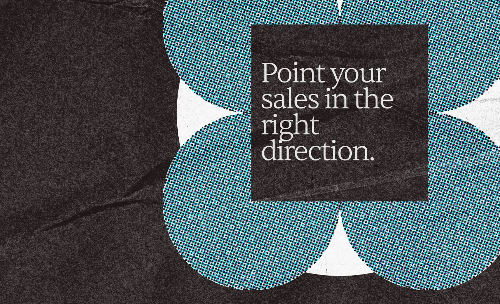
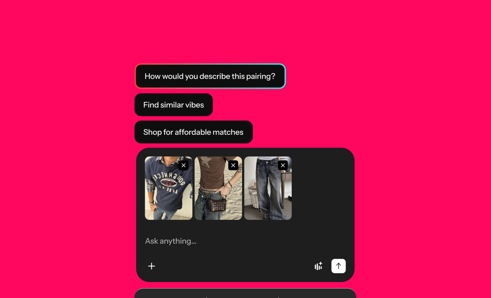

I’m Jordan, previously at Cardinal, Docusign , a designer who restlessly creates for human experiences.


And, a learning design engineer turning static designs into something tangible.
Learn about my workflowMy works
Internships, contract
Brand designer for Cardinal (YC ‘26)
Logo, brand, and asset design for salesProduct design intern with Docusign
AI for building templates